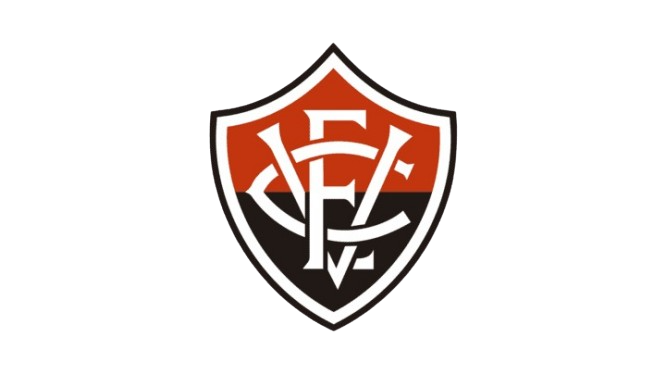

Esporte Clube Vitória
Um dos clubes mais antigos e importantes do país, o Esporte Clube Vitória foi fundado em 13 de maio de 1899, em Salvador, Bahia. Inicialmente, era um clube de críquete, conhecido como Club de Cricket Victoria. Em 1902, mudou para Sport Club Victoria, e em 1946, foi rebatizado com o atual nome, Esporte Clube Vitória.
Suas cores originais foram o preto e o branco, devido à dificuldade de encontrar tecidos nas cores verde e amarelo, que chegaram a ser sugeridas. Atualmente, o clube é conhecido como "Rubro-Negro" ou "Leão da Barra", em alusão às suas cores vermelho e preto.
História e Tradição
A transição do críquete para o futebol na Bahia foi impulsionada pela chegada da primeira bola de futebol e um livro de regras, trazidos da Inglaterra por José Ferreira Júnior, o Zuza, por volta de 1901. O Vitória conquistou seu primeiro título ainda no amadorismo, em 1908. A profissionalização do futebol no clube ocorreu em 1953.
O estádio do Vitória é o Estádio Manoel Barradas, popularmente conhecido como Barradão. A frase "antes e depois do Barradão" é um marco cultural para a torcida. A "Fábrica de Talentos" do Vitória, suas divisões de base, são famosas por revelar grandes nomes do futebol mundial, como Bebeto, Dida, Vampeta, David Luiz e Hulk. Sua principal rivalidade é com o Bahia, no clássico Ba-Vi.
Em 2023, o Rubro-Negro conquistou o título de campeão brasileiro da Série B, o mais importante de sua história, sendo seu primeiro título nacional. O clube também foi vice-campeão do Campeonato Brasileiro Série A em 1993 e da Copa do Brasil em 2010.
Títulos do Vitória
- Campeonato Brasileiro Série B: 2023;
- Copa do Nordeste: 1997, 1999, 2003 e 2010;
- Campeonato Baiano: 1908, 1909, 1953, 1955, 1957, 1964, 1965, 1972, 1980, 1985, 1989, 1990, 1992, 1995, 1996, 1997, 1999, 2000, 2003, 2004, 2005, 2007, 2008, 2009, 2010, 2013, 2016 e 2017;
- Torneio José Américo de Almeida Filho: 1976;
- Trofeo Ciudad de Valladolid: 1997;
- Torneio de Dakar;
- Copa do Brasil de Futebol Sub-17: 2015;
- Copa do Brasil de Futebol Sub-15: 2010;
- Copa Brasil de Futebol Infantil: 2000;
- Campeonato Brasileiro Dente-de-Leite: 1972;
- Copa do Brasil Sub-20: 2012;
- Taça BH de Futebol Júnior: 1994.